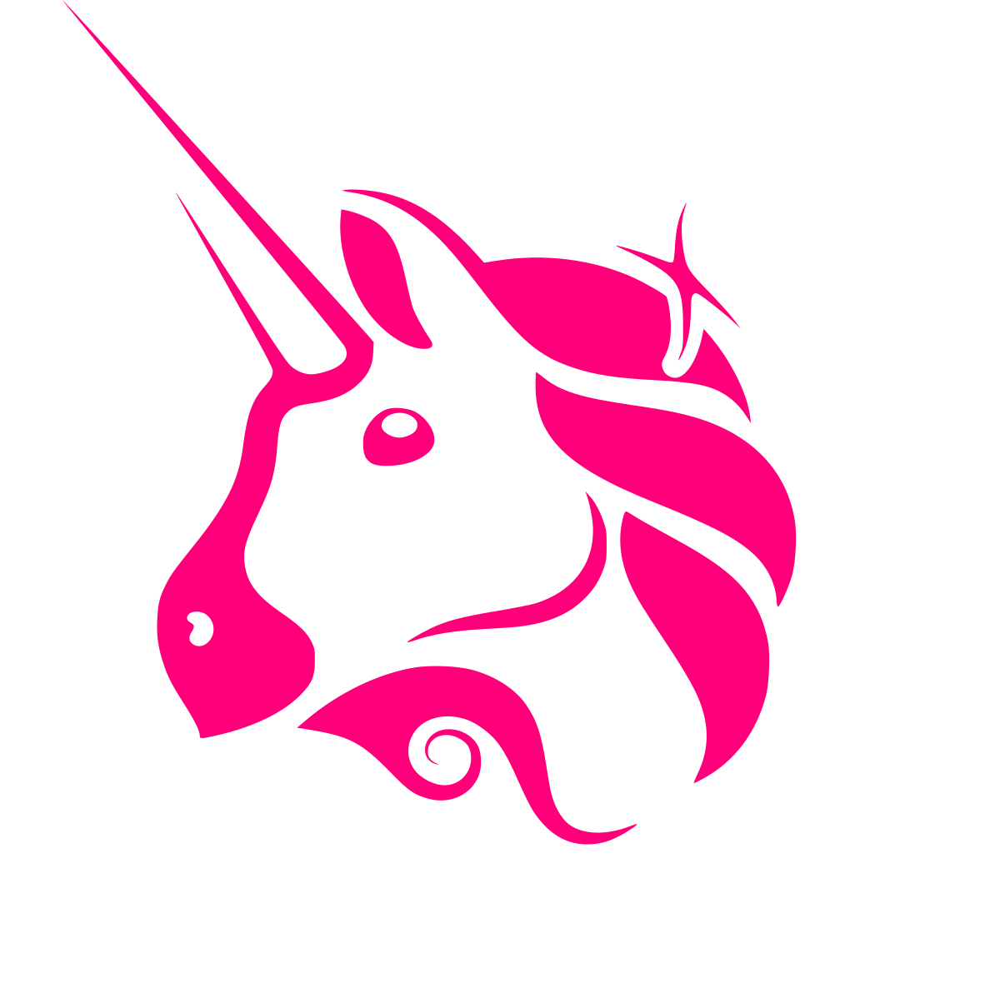
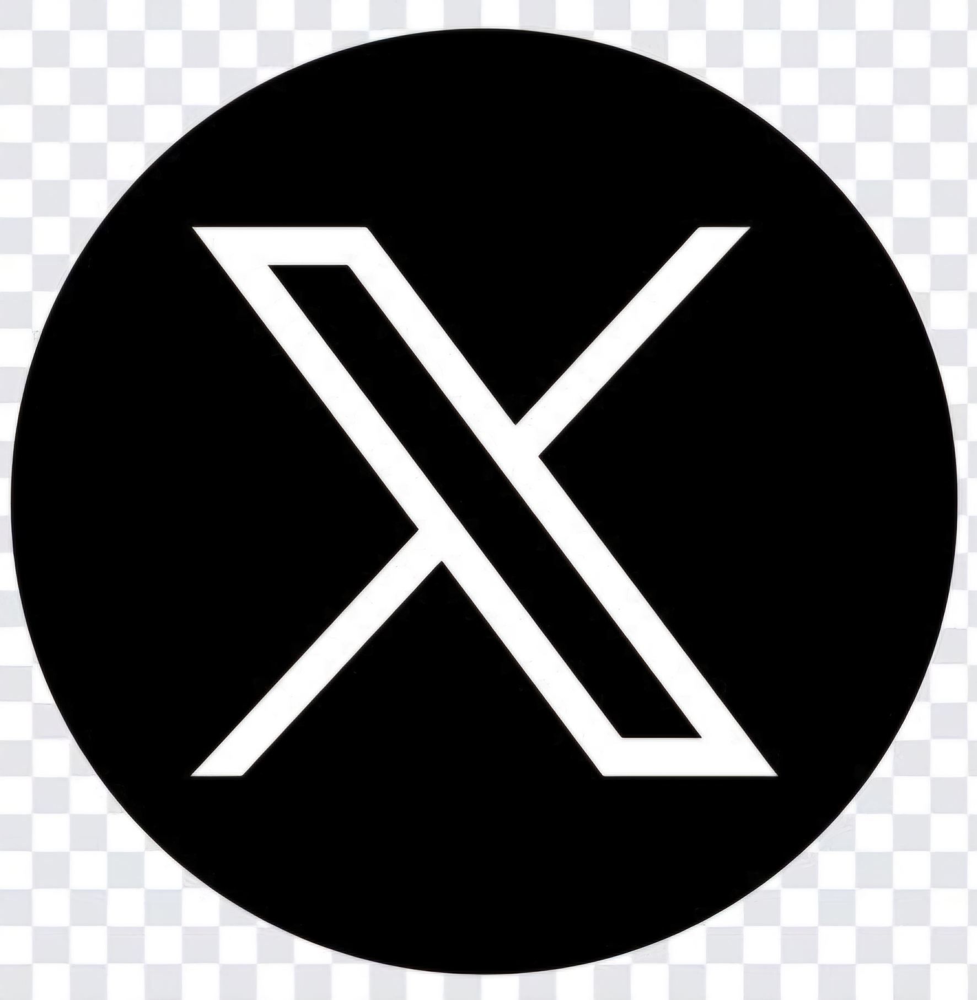

Our Vision
The sustainable use of waste paper is a key component of a resource-efficient circular economy. In the long term, our system will serve as a certification and verification tool for paper recycling along the entire value chain. Through NFT-based certificates stored on the blockchain, we aim to offer a globally recognized and verifiable standard that demonstrates compliance with environmental and supply chain diligence regulations. Through blockchain technology, we enable traceability and certification from the point of collection to the final paper product.
The PaperCoin Incentive Model
Empowering Circular Economy through Blockchain Technology
1. Certificates as On-Chain Assets
Each verified ton of recycled wastepaper is represented by a unique NFT certificate (Proof of Recycling – PoRC), similar to carbon credits. These certificates are tradable and can only be generated through real, verifiable production data.
PaperCoin acts as a utility token to issue, acquire, or transfer these recycling certificates.
Token value correlation: The higher the demand for certificates (e.g. from companies, investors, or for ESG reporting), the more PaperCoins are required.
2. Limited Token Release Based on Verified Recycling
The total supply of PaperCoin is fixed, but token distribution is tied to actual recycling performance. For example: 1,000,000 PaperCoins may be unlocked for every verified ton of recycled wastepaper and distributed to involved parties (mills, collectors, supporters).
Less recycling = fewer coins released = scarcity drives token value.
3. Scarcity Drives Demand and Price Incentives
As wastepaper becomes harder to source, its market price increases. Businesses look for alternatives or investment opportunities in recycling. PaperCoin becomes a financial tool to participate in the value chain of recovered paper, thanks to its traceable and verifiable blockchain foundation.
Investors can buy PaperCoins as a way to engage in the growing demand for recycling.
4. Staking & Rewards for Collectors and Traders
Collectors or suppliers who deliver high-quality wastepaper receive PaperCoin rewards via smart contracts. Better quality or consistency results in more tokens – encouraging cleaner delivery chains and reducing contamination.
5. Platform Marketplace for Certificates & Tokens
- Buy certificates (e.g., for ESG reports or compensation)
- Acquire, swap, or stake PaperCoins
- Position themselves as sponsors and demonstrate environmental commitment
Added Value: Price Linked to Real Use
- It builds trust – even with regulators or ESG auditors
- It creates price stability through real-world demand
- It fosters a long-term, functional ecosystem

The Origin of PaperCoin – Turning Vision into Purpose
The idea behind PaperCoin emerged from a growing awareness of the urgent challenges in the recycling industry and the potential of blockchain technology to drive real-world impact.
In 2022, I started working as a development engineer at a paper mill that processes 100% recycled paper. It didn’t take long for me to realize that high-quality wastepaper is becoming a rare commodity. The supply is shrinking, and demand keeps growing.
In late 2024, I got back into the crypto world and came across educational content from Cryptoshäre. That’s when I started to truly understand how cryptocurrencies work – and how they can create real incentives.
After several attempts on the Solana blockchain, I finally launched the PaperCoin project on the Base network in February 2025.
PaperCoin is not just a token – it’s a mission. We want to reward recycling, support a circular economy, and make valuable raw materials more accessible through digital innovation.

Roy Eggert
Founder of PaperCoin
NFT Collection
The First PaperCoin NFT Has Arrived! We proudly present the very first NFT of our journey — now available to mint on:
This artwork is just the beginning of a larger collection that will visually tell the story behind PaperCoin — from its origin to its global mission. More NFTs will follow soon, each adding a new chapter to this unfolding legacy.
Be part of history. Claim your limited piece now! (The full collection name will be revealed later — stay tuned.)
How to Buy
You can buy PaperCoin via the following platforms:
 Uniswap
 Coinbase Wallet
Coinbase Wallet
 Tokepad
Tokepad
Coin Info
Contact Us
 roy.eggert@gmx.de
roy.eggert@gmx.de
 Telegram Group
Telegram Group
 X (Twitter)
 Instagram
Instagram
 LinkedIn
LinkedIn
Impressum
responsible for the content:
Roy Eggert
E-Mail: roy.eggert@gmx.de